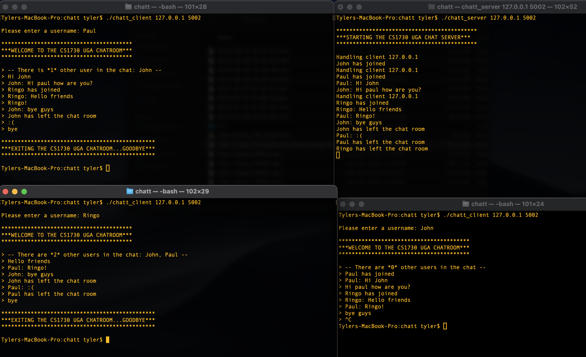
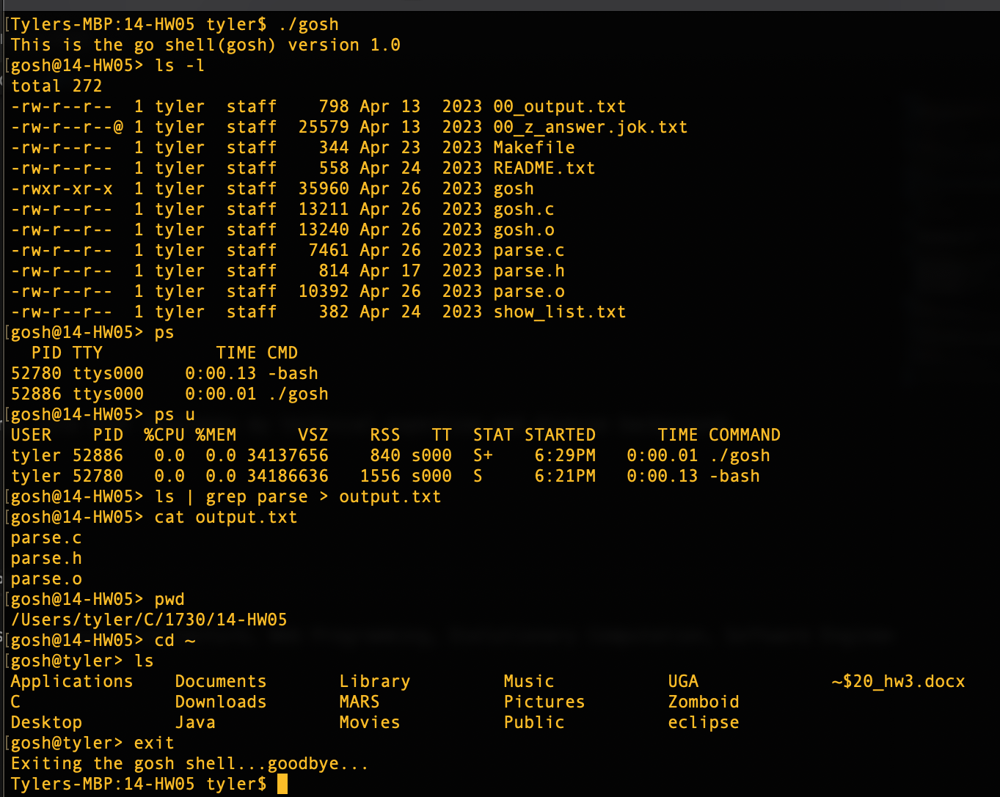

FTP/sockets Server-Client Chat Room (C)
- Built a TCP chat room server capable of handling multiple clients using threads, enabling simultaneous communication between users.
- Implemented message broadcasting to all clients except the sender, along with real-time room status updates for each client.
- Managed client connections with socket programming, including sending and receiving messages via recv(), send(), and write() functions.

JavaFX application with Multiple API's (Java with Maven buildtool)
- Developed a JavaFX app with the goal of querying one API with the response of a seperate API.
- Utilized HttpRequest and HttpResponse to handle API requests, with GSON to parse JSON responses for extracting and sending data from multiple API's.

Unix Shell (C)
- Developed a C-based shell with support for commands and input/output redirection.
- Implemented pipeline execution and process control using fork(), execvp(), and dup2() for managing multiple commands and redirection.
- Provided robust error handling and a dynamic prompt reflecting the current directory.